Chloe Klare
Astronomer @ Penn State
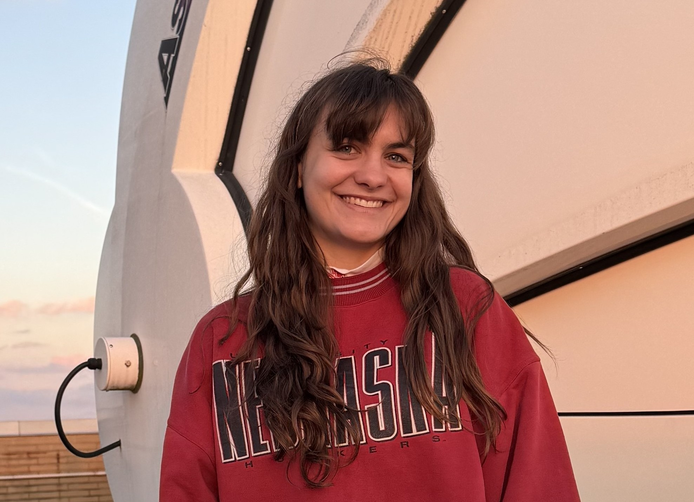
Contact: chloe.klare [at] psu [dot] edu
About Me
Hi, my name is Chloe Klare and I'm a Ph.D. student in Astronomy and Astrophysics at the Pennsylvania State University. I'm an observational radio astronomer, and I'm interested in radio-variable active galactic nuclei and other extragalactic radio transients! You can read more about my research here and the work the rest of my research group (Ward group) is doing here.
Before moving to Penn State, I earned my bachelor degrees in Astronomy and Mathematics (+ Music minor) from Florida Institute of Technology, where I worked on modeling of clouds in Jupiter's atmosphere.
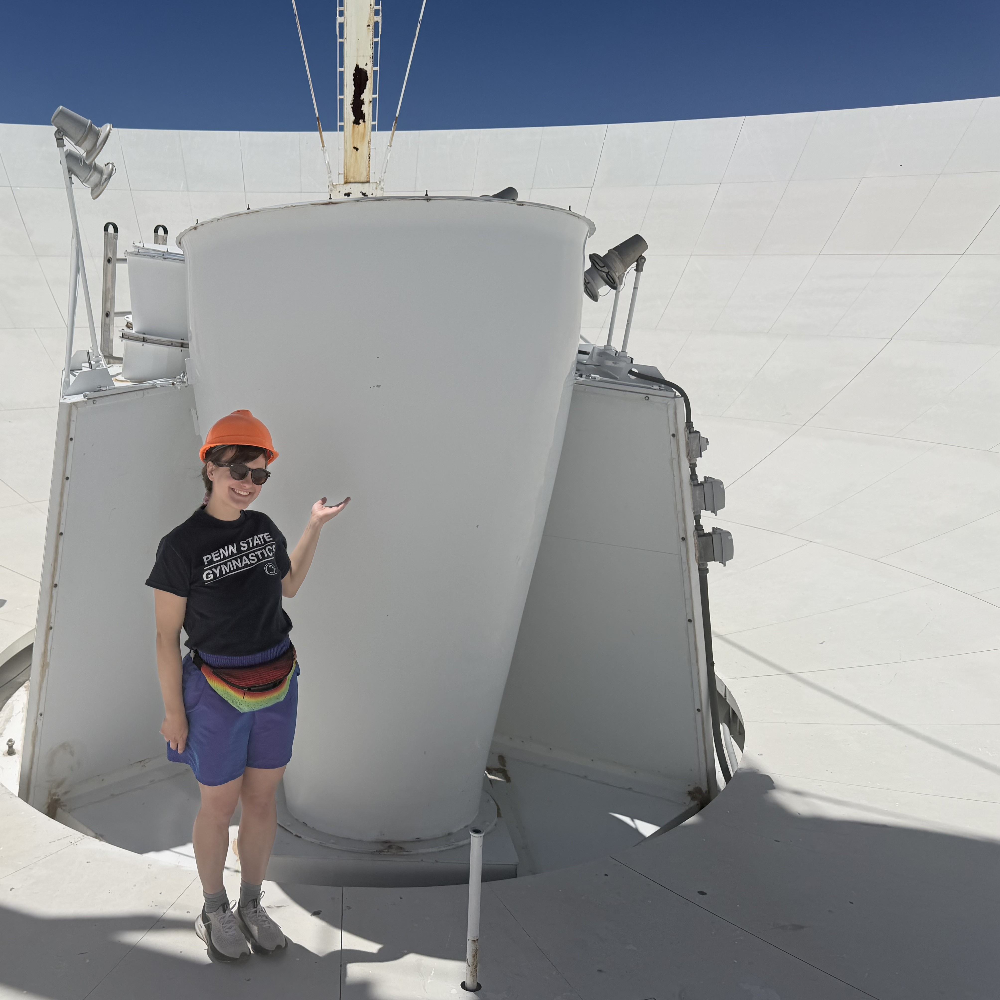
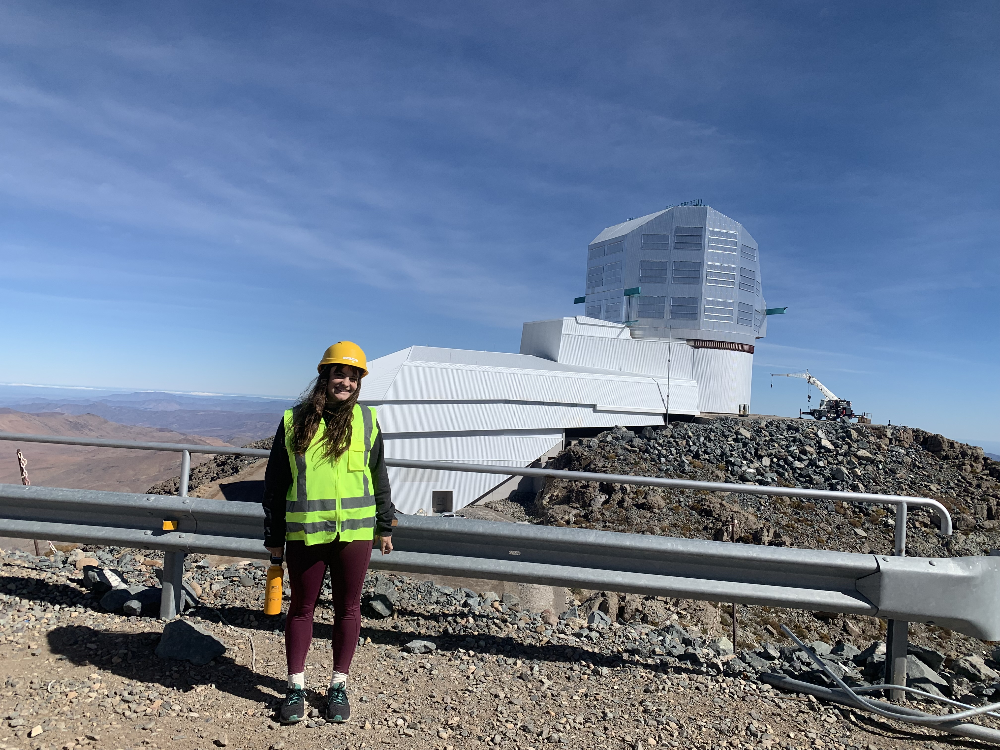
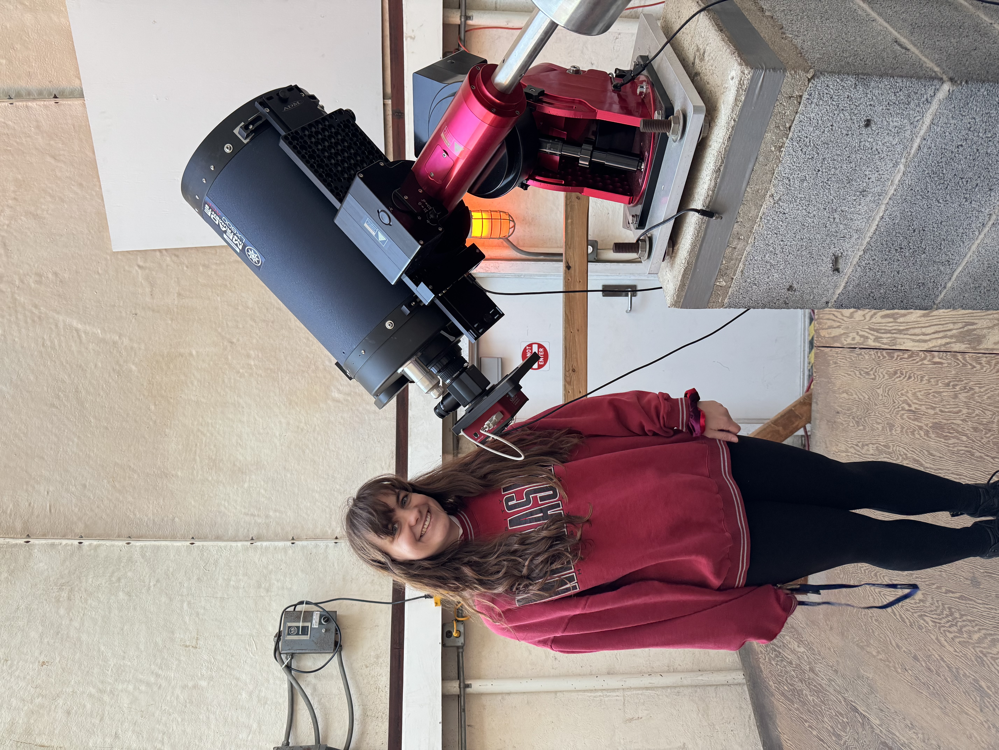
Left: Standing next to the receivers in an antenna dish in the Very Large Array. Middle: Touring Vera Rubin Observatory back before it was operational. Right: Giving a tour of the domes on the roof of Davey Lab at Penn State!
My Research
I have been searching for newly launched radio jets in active galactic nuclei (AGN) with the Australia SKA Pathfinder (ASKAP) 888 MHz survey for Variables and Slow Transients (VAST). I selected a sample of 101 candidates which had increased in flux density by 80%-1800% over the past 2-7 years to investigate. Twenty-six were brightening due to intrinsic jet activity, and seven only appeared variable due to refractive interstellar scintillation, but had inverted radio spectra, indicating that the source of the radio emission is very young or very compact. My paper is under review, but you can read the preprint here.
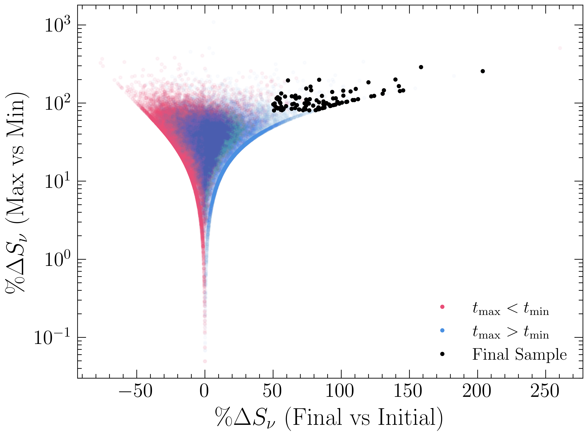
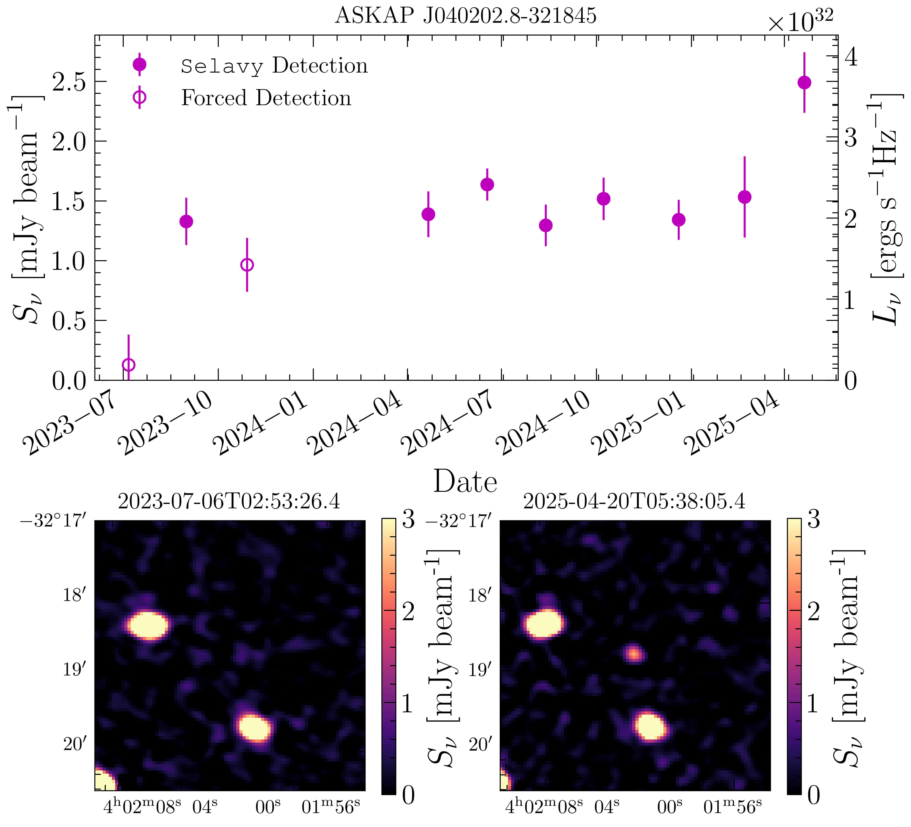
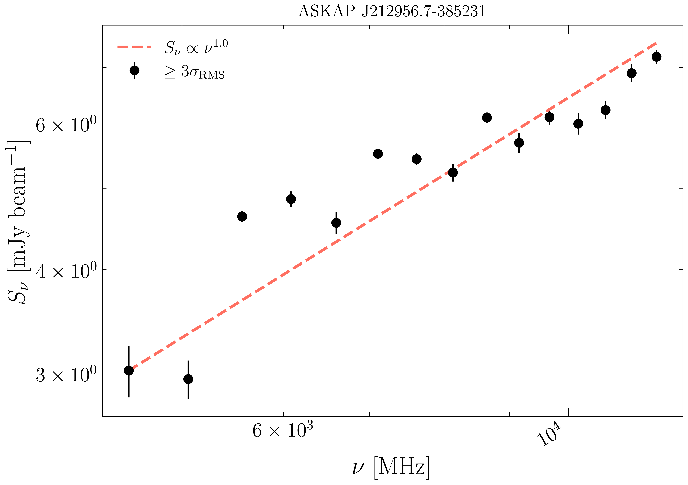
Left: My sample of radio variable AGN compared to all 65,000 VAST-detected AGN. Middle: VAST observations of ASKAP J040202.8-321845, an AGN with a brightening jet. Right: Quasi-simultaneous observations ASKAP J212956.7-385231 from the Australia Telescope Compact Array revealing a high-frequency peaked spectrum, indicating the radio source is very young. Klare+2026 (submitted).
Astrobites
I write for Astrobites, a science news publication run by physics and astronomy graduate students from around the world and supported by the American Astronomical Society. I usually cover recent discoveries in astronomy, but sometimes I get to write editorials, like the top ten differential equations in astronomy or why radio is the best band in the electromagnetic spectrum.
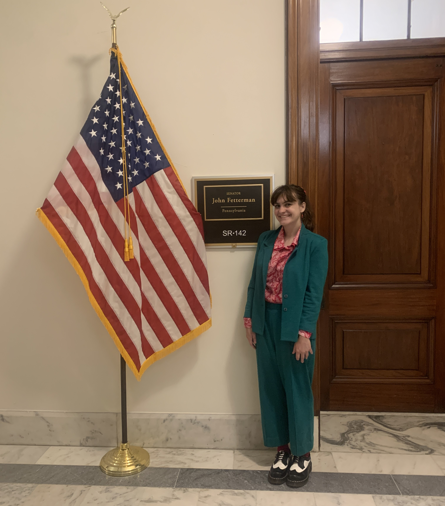
Life...in Space!
I direct an astrobiology-themed summer camp (Life...in Space!) for middle school students through Science-U at Penn State. Visiting our very own on-campus Breazeale Nuclear Reactor, embarking on a scale model of the Solar System svavenger hunt, and creating a DIY supernova are always camper favorites. You can learn more about my camp here!
In Other News...
Outside of my usual outreach activities, I sometimes find other fun projects to work on, like moonlighting as a lobbyist on Capitol Hill to save NASA or getting interviewed about studying astronomy by National Geographic!
Read the (very cool) article here: Why the Apollo missions made Florida synoynmous with space.
Did you know you can walk into any office on the Hill and the staffers have to listen to you, even if you aren't their direct constituent? It works too; every representative whose office I visited to talk about the importance of funding astronomy research later voted to reject proposed NASA budget cuts! ->
Courses I've Taught at Penn State
ASTRO 5: Sky and Planets* (Fall 2026)
ASTRO 1: Astronomy Universe* (Fall 2025)
ASTRO 237W: Astronomy Communications (Fall 2024)
*I wrote the curriculum in addition to being the instructor of record.
Beyond Astronomy
Outside of working on my Ph.D. at Penn State, I compete on the Club Gymnastics team and perform with the Volé Dance Company. I also love to travel, both for work and for fun (although I won't pass up an opportunity for astronomy-adjacent sightseeing, even on Spring Break)!
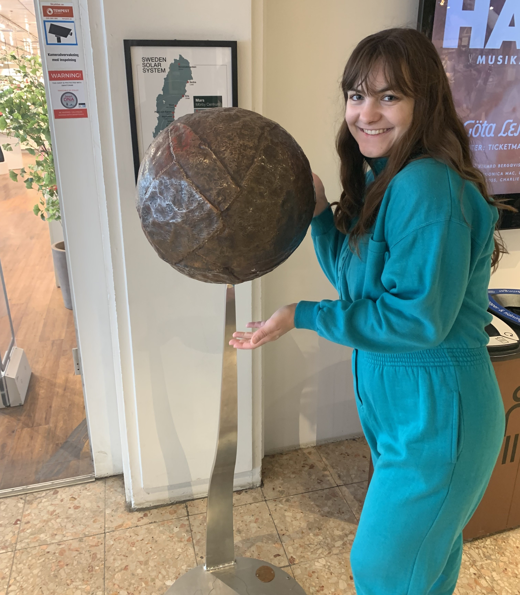
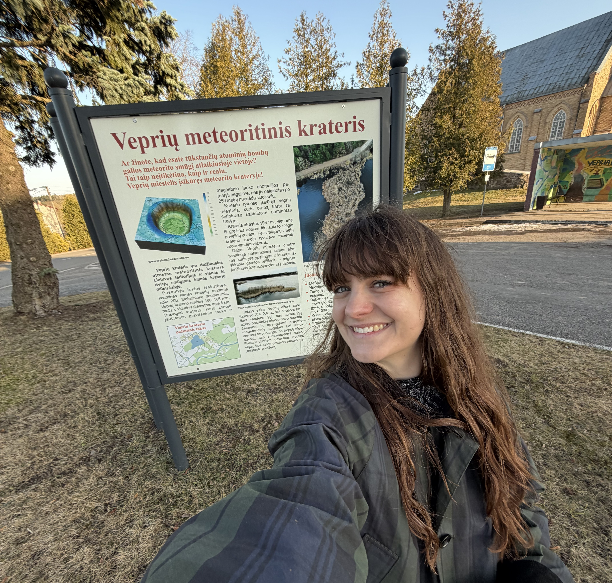
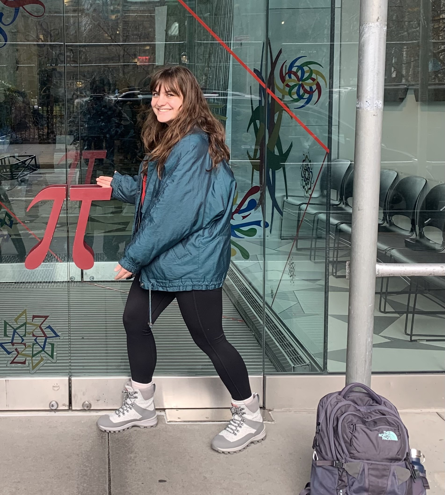
Left: Road-tripping across Sweden to see the world's largest scale model of the Solar System. Middle: Standing in the Vepriai impact crater in Lithuania. Right: Visiting the National Museum of Mathematics in New York City!